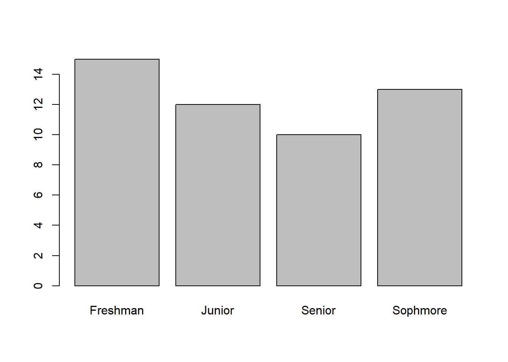
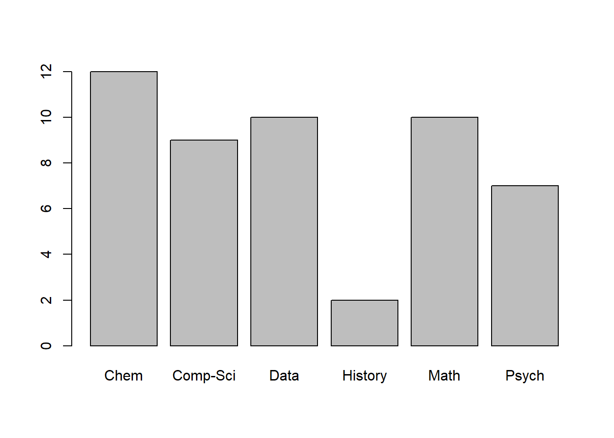

# My file is saved on my Desktop, yours might be saved under Downloads
Data_200_df <- read.csv("Desktop/Data_200_df.csv")9 Loading Data in R & EDA
9.1 Loading Data into R
Sometimes we are interested in using data that isn’t in R. If this is the case, we will have to load the data into R ourselves using a CSV file. To follow along with this lecture writeup, you should download the dataset called “Data_200_df.csv” on Canvas under the Modules. Now to load data into R there are several different ways we can do it. One way is using the read.csv() function where we pass the file path into the function.
An easier method to load data into R (so we don’t have to memorize the function!) is to go to “File -\(>\) Import Dataset -\(>\) From Text (base)” and then select the file we want to import. Using this method also makes it easier for us to customize our request like identifying if we have row/column headers or if all of the strings should be factors.
9.2 Converting character vectors to factors
Now that we have the data loaded into our R environment, we can start to do some Exploratory Data Analysis (EDA) on it. The first thing we will want to do is look at the structure of the dataset to see what we are dealing with. This can be done using the str() function. In our case here, we do not have any documentation to compare our data or to learn about the dataset.
str(Data_200_df)'data.frame': 50 obs. of 6 variables:
$ names : chr "Theresa" "Clyde" "Katrina" "Ricky" ...
$ ages : int 21 20 19 19 19 23 18 21 24 23 ...
$ state : chr "NY" "NC" "NY" "NY" ...
$ year : chr "Freshman" "Freshman" "Sophmore" "Sophmore" ...
$ majors: chr "Psych" "Comp-Sci" "Math" "Psych" ...
$ sport : int 0 1 1 0 1 1 0 0 0 0 ...Looking at this, it would probably make sense to turn a couple of these columns into factors instead of having them be character/integer vectors. This can be done using the factor() function and then altering the levels if need be (since sport is given as 0 or 1 we may want to alter the level name to No and Yes). We should only convert a vector to a factor column if there are finite number of categories and there are multiple occurrences of each category. So, we will not need to convert the “names” column since they are all unique and there are virtually infinite number of possibilities.
Data_200_df$state_f <- factor(Data_200_df$state)
Data_200_df$year_f <- factor(Data_200_df$year)
Data_200_df$majors_f <- factor(Data_200_df$majors)
Data_200_df$sport_f <- as.factor(Data_200_df$sport)
levels(Data_200_df$sport_f) <- c("No", "Yes")9.3 Utilizing the Table function
To better understand the dataset, it is helpful to calculate some descriptive statistics and create some visualizations as well. To calculate descriptive statistics for a categorical variable we can use the table() function. This will tell us how many times each category occurs.
table(Data_200_df$year)
Freshman Junior Senior Sophmore
15 12 10 13 barplot(table(Data_200_df$year))
table(Data_200_df$majors)
Chem Comp-Sci Data History Math Psych
12 9 10 2 10 7 barplot(table(Data_200_df$majors))
So, this shows us the number of students who are Juniors, and the number of students who are Data majors, but can we determine how many Junior Data majors we have? One way we could do this is by using a logical vector:
sum(Data_200_df$year=="Junior" & Data_200_df$majors=="Data")[1] 2If we are interested in other combinations we certainly could carry out the process again and again for all 24 combinations. Another way that will count the number of students who fall into each category is to use the table() function but pass two categorical variables into it. It will count the number of occurrences for each combination of groupings.
table(Data_200_df$majors, Data_200_df$year)
Freshman Junior Senior Sophmore
Chem 4 3 2 3
Comp-Sci 4 3 1 1
Data 1 2 2 5
History 1 1 0 0
Math 3 1 4 2
Psych 2 2 1 29.4 Utilizing the Aggregate function
Another type of descriptive statistic that we can calculate is the mean on one of the variables (age in our case). While this is helpful, it might also be interesting to see the mean age by major, and to do this we can use a logical vector within our index-selection brackets.
mean(Data_200_df$ages)[1] 20.7mean(Data_200_df$ages[Data_200_df$majors=="Psych"])[1] 20.42857mean(Data_200_df$ages[Data_200_df$majors=="Chem"])[1] 20.91667mean(Data_200_df$ages[Data_200_df$majors=="History"])[1] 18Running a line of code for every major is tedious and cumbersome. To do it more efficiently we could use the aggregate() function. In this function, we will pass in the variable we want to calculate, then specify what we want to group by (which needs to be in the list() function and be a categorical variable), and finally specifying the function we want to run. The general setup for this function will be:
aggregate(Quantitative_Variable, by = list(Categorical_Grouping_Variable), math_function)An example of this function can be seen below:
aggregate(Data_200_df$ages, by=list(Data_200_df$majors), mean) Group.1 x
1 Chem 20.91667
2 Comp-Sci 21.44444
3 Data 19.90000
4 History 18.00000
5 Math 21.30000
6 Psych 20.42857The way we can read the output from above is that the average age of Chemistry majors is 20.92, the average age of Computer Science majors is 21.44, and so on. We can divide our population up into more groups if we want. For instance, maybe we want to find the average age of people based on their major and whether they play a sport. To do this we will pass in two variables in the by argument.
aggregate(Data_200_df$ages,
by=list(majors = Data_200_df$majors,
sports = Data_200_df$sport),
mean) majors sports x
1 Chem 0 20.60000
2 Comp-Sci 0 21.80000
3 Data 0 20.60000
4 Math 0 21.20000
5 Psych 0 21.00000
6 Chem 1 21.14286
7 Comp-Sci 1 21.00000
8 Data 1 19.20000
9 History 1 18.00000
10 Math 1 21.40000
11 Psych 1 19.00000For this output, we would interpret it similarly. We would say the average age of Chemistry majors who do not play a sport is 20.60, and the average age of Chemistry majors who play a sport is 21.14. We can then do it for all possible combinations of majors and whether they play a sport or not. We can also carry this out using different functions like sd, length, median, and so on.
aggregate(Data_200_df$age, by=list(state= Data_200_df$state), sd) state x
1 MD 2.345208
2 NC 1.378405
3 NY 2.101805
4 PA 2.645751
5 VA 1.612452
6 WV 2.438123Within this section, we have learned two powerful functions which help us summarize categorical and quantitative data. We should think about what data we have present though before we run the code. If we try to run the table function on data that is not categorical (with relatively few categories) or if we try to use the aggregate function and group by quantitative data then the output will not be readable due to the number of possibilities. Therefore, it is important to think about what type of data we are passing into each function and whether the output is particularly useful.